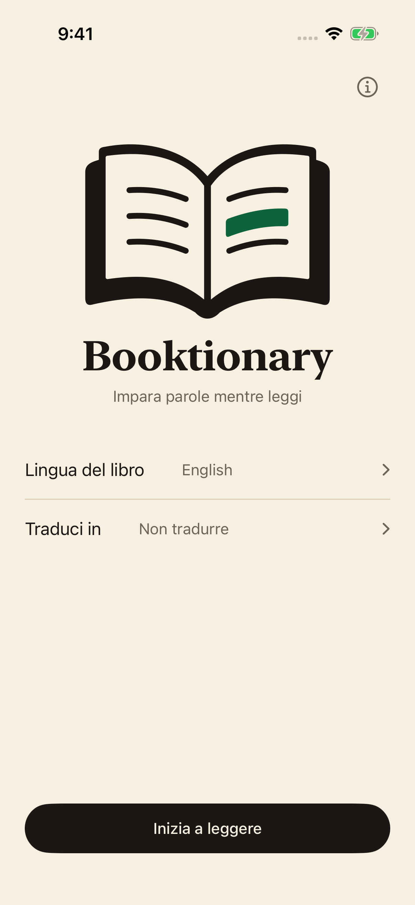
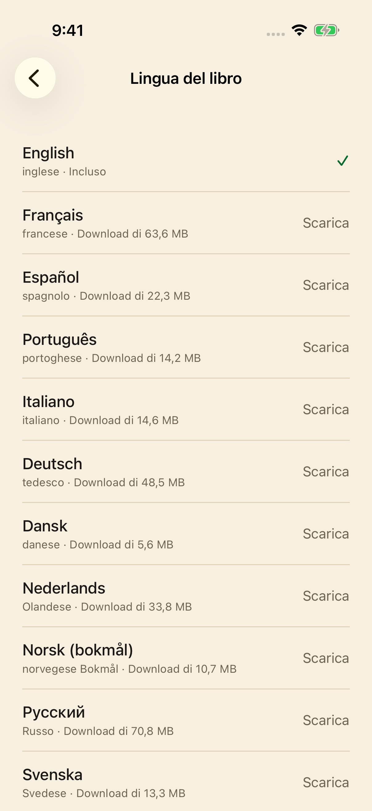

01
Apri il libro e l’app.
Scegli la lingua del libro e tocca Inizia a leggere.
Un piccolo compagno per i libri di carta
Una parola nuova non dovrebbe interrompere un bel libro. Inquadra la pagina con l’iPhone, scopri il significato e continua a leggere.
$1.99 USDAcquisto unico. Nessun abbonamento.
 Meno ricerche. Più lettura.
Meno ricerche. Più lettura.Un momento di curiosità
Niente da digitare, nessun cambio di app. Un’occhiata e torni al libro.

Scegli la lingua del libro e tocca Inizia a leggere.
Tieni il piccolo cerchio verde sulla parola per circa un secondo. L’evidenziazione conferma la lettura.

Leggi la definizione e scorri per chiuderla. La fotocamera resta pronta per la prossima parola.
Scegli la lingua del libro
Le definizioni inglesi sono integrate. Scegli fra altri 23 dizionari e scarica solo quelli che ti servono.
Leggi un libro in inglese? Scegli fra 24 pacchetti separati di traduzione di parole: le 23 lingue dei dizionari scaricabili sopra, più il greco.
Il greco offre interfaccia e traduzioni di parole inglesi, ma non lettura di libri greci. Il curdo copre il kurmanji in alfabeto latino, non il sorani; il malese copre il rumi in alfabeto latino. Il cinese supporta scrittura semplificata e tradizionale. La copertura varia per parola, forma e lingua.
27 interfacce localizzate, compresi francese canadese e cinese semplificato e tradizionale.
Tutti i dizionari e i pacchetti di traduzione disponibili sono inclusi nell’acquisto. Quelli installati funzionano offline.

L’essenziale
I dizionari e le traduzioni installati funzionano senza connessione.
Immagini e parole riconosciute restano sull’iPhone. Niente account, pubblicità, statistiche o tracciamento.
Tutti i dizionari e pacchetti di traduzione disponibili sono inclusi. Nessun abbonamento o acquisto in-app.
Sì. Il dizionario inglese è incluso. Scarica gli altri dizionari e traduzioni quando sei online; poi funzionano senza connessione. Consultare il catalogo richiede Internet.
Le 24 lingue di lettura sono elencate sopra. L’inglese è integrato; gli altri 23 dizionari si scaricano separatamente. Scegli la lingua del libro prima di leggere. Il cinese supporta entrambe le scritture; il curdo copre il kurmanji latino e il malese, il rumi.
Per libri inglesi, scegli un pacchetto separato di traduzione verso una delle 23 lingue dei dizionari scaricabili o il greco. Sono equivalenti di parole, non traduzioni di intere pagine. La copertura varia. Scaricare un dizionario non installa traduzioni; le altre lingue di lettura mostrano definizioni native.
Booktionary richiede un iPhone con iOS 17 o successivo. Una buona luce facilita il riconoscimento del testo.
No. Immagini, parole e ricerche restano sul dispositivo. Nessun account, pubblicità o analisi. I download contattano il server, che può ricevere il tuo indirizzo IP.
Una buona illuminazione aiuta. Avvicina il telefono se il testo non viene riconosciuto e scegli la lingua del libro prima di iniziare. Per verificare l’uso offline, installa le risorse e cerca una parola in modalità aereo.
Serve aiuto? Scrivi a fredddv@hotmail.com indicando il modello di iPhone, la versione di iOS, la lingua del libro e il problema.
Per amore dei libri di carta
$1.99 USDAcquisto unico. Nessun abbonamento.
Per iPhone · iOS 17 o successivo